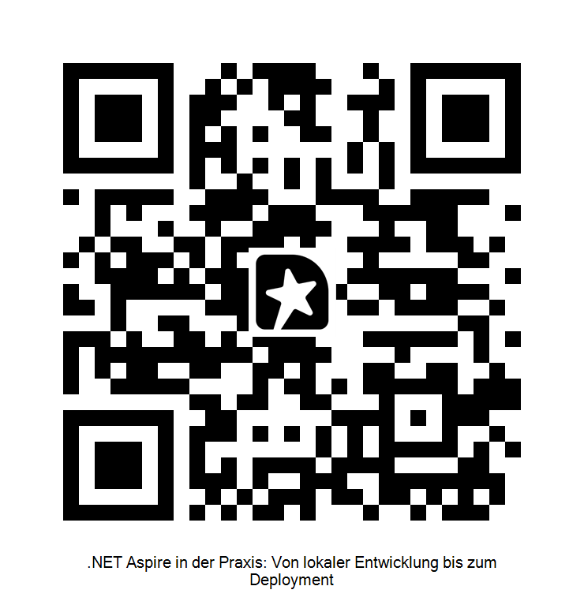

Von lokaler Entwicklung bis zum Deployment
Sven Hennessen
vensas GmbH
Project Tye
Microsoft Labs
Experimentell
.NET Aspire Preview
Build 2023
Dev-Tooling-Fokus
Aspire GA
Mai 2024, .NET 8
Stabile API
Aspire eigenständig
Kein .NET-Lock-in
eigene Versionierung
Aspire hat sich von einem reinen Dev-Tool zu einer ernstzunehmenden Plattform für verteilte Systeme entwickelt — das Deployment-Thema ist von Anfang an mitgedacht, aber noch nicht fertig.
Ein Kommando
dotnet run --project AppHost
PostgreSQL, RabbitMQ, Python-Sensor, .NET API, React — alles startet, verbindet und wartet aufeinander.
Polyglot out of the box
.NET via AddProject<>
Python via AddPythonApp
React/Vite via AddViteApp
Alles gleichwertig im AppHost.
WaitFor & WithReference
.WaitFor(rabbitmq) — wartet auf Healthy
.WithReference(db) — injiziert Connection String
Keine Race Conditions mehr bei Startup.
Dashboard
Strukturierte Logs, Traces & Metrics live im Browser.
OpenTelemetry out of the box —
kein separates Monitoring-Setup nötig.
🔐 Secret — kein Default
var pwd = builder.AddParameter( "rabbitmq-password", secret: true);
→ Gespeichert in dotnet user-secrets
→ Kein Wert = Fehler beim Start
→ Production: Azure Key Vault, Kubernetes Secrets
# Lokal setzen dotnet user-secrets set \ "Parameters:rabbitmq-password" \ "supersecret"
⚙️ Parameter — mit Default
var cap = builder.AddParameter( "cookie-jar-capacity", "100"); // Default im Code
→ Kein Secret, kein user-secrets nötig
→ Injiziert als CookieJar__Capacity
→ IOptionsMonitor<T> im Service
Beide Typen fließen als Umgebungsvariablen in die Services —
Aspire übernimmt Naming Convention und Injection.
Teil des AppHost-Prozesses. Services senden OTLP via Env-Var-konfiguriertem Endpoint direkt an den AppHost-internen Collector.
Daneben läuft ein gRPC-Backchannel für Ressourcenstatus, Live-Logs und Commands wie aspire publish.
Alles ist ein IResource. Der Builder akkumuliert nur Annotations
(ContainerImageAnnotation, WaitForAnnotation …).
Build() materialisiert das Modell — danach nur noch Ausführung.
.WithReference(db) hängt eine EnvironmentCallbackAnnotation an.
Beim Start löst Aspire den Ausdruck auf und setzt
ConnectionStrings__<name> — kein fixer Port im Code.
Aspire setzt services__server__http__0=http://localhost:PORT.
AddServiceDefaults() registriert einen Resolver,
der IConfiguration auswertet →
http://server funktioniert.
Interne State Machine: Starting → Running → Healthy.
.WaitFor(x) blockiert bis Zielzustand erreicht,
nicht nur bis der Port offen ist.
Lokal
# Starten dotnet run --project AppHost # Dashboard direkt öffnen aspire dashboard
Deployment-Artifacts generieren
# Docker Compose aspire publish \ --output-format docker-compose \ --output-path ./deploy/docker # Kubernetes / Helm aspire publish \ --output-format helm \ --output-path ./deploy/helm # Kamal (custom publisher) aspire publish \ --output-format kamal \ --output-path ./deploy/kamal
Gleiche AppHost-Definition — drei Deployment-Ziele.
Custom: IDistributedApplicationPublisher
ℹ️ Azure ist first-class citizen in Aspire (Container Apps, AZD, Azure-Hosting-Integrationen) — in diesem Vortrag fokussieren wir uns auf Docker und Kubernetes.
🐳 Docker Compose
aspire publish \
--output-format docker-compose \
--output-path ./deploy/docker
docker compose \
-f ./deploy/docker/docker-compose.yml \
up --build
☸️ Kubernetes / Helm
aspire publish \
--output-format helm \
--output-path ./deploy/helm
helm upgrade --install cookiejar \
./deploy/helm -n cookiejar
aspire deploy --list-steps (experimentell)Was ist Kamal?
kamal setup && kamal deploy# Generieren aspire publish \ --output-path ./deploy/kamal # Ausgabe: # deploy.yml # .kamal/secrets.example
PipelineStep implementieren
var step = new PipelineStep { Name = "generate-kamal-config", Action = async ctx => { var output = ctx.Services .GetRequiredService< IPipelineOutputService>(); // Generiert deploy.yml + .kamal/secrets } }; step.RequiredBy( WellKnownPipelineSteps.Publish);
// In AppHost.cs registrieren: builder.AddResource( new KamalDeploymentResource("kamal")) .WithPipelineStepFactory( KamalPipelineStep.Create);
# MCP-Server einrichten aspire agent init # → konfiguriert claude_desktop_config.json # → oder andere MCP-fähige KI-Tools
Was der MCP-Server bereitstellt
Echter Mehrwert heute
Fazit: MCP macht Aspire zum strukturierten Kontext-Provider für KI-Tools — das ist der interessanteste Aspire-Trend 2026.
⚠️ Herausforderungen
✅ Bewährte Patterns
WaitFor konsequent nutzen — nie auf Timeouts verlassenAddServiceDefaults() in jedem Service — Observability kostet nichts.WithReplicas(2) — Produktionsprobleme durch Replica-Interferenz lokal nachstellen
Feedback?